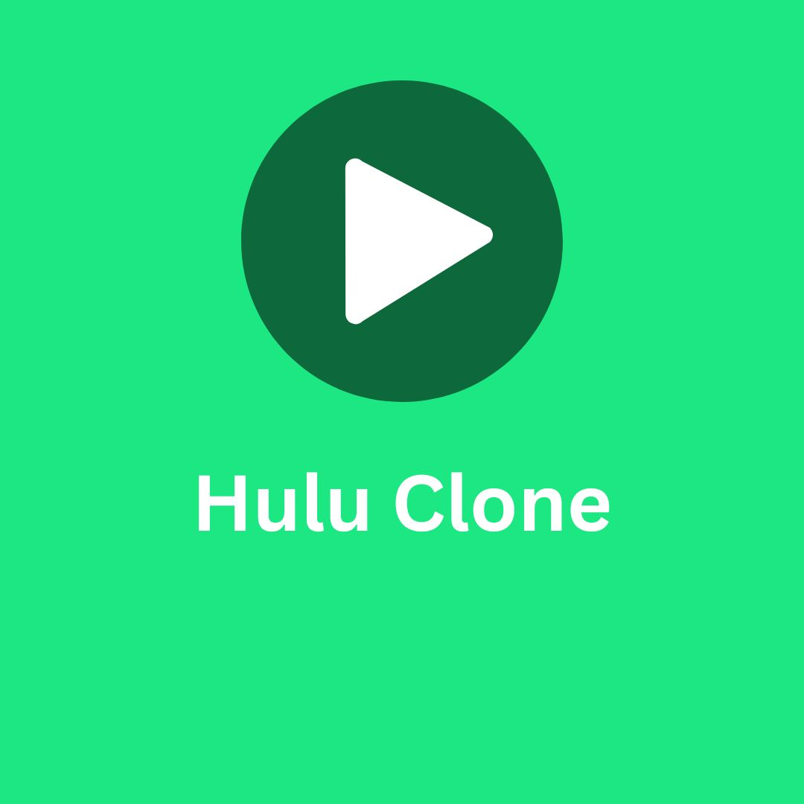

Hulu Clone
The Hulu Clone project replicates the core features of the popular video streaming service, Hulu. Users can browse, search, and stream TV shows and movies. The platform includes a responsive design for various screen sizes, user authentication, and a media player with controls for video streaming. This app is built using the MERN stack (MongoDB, Express, React, Node.js), with additional features like user profiles, playlists, and recommendations.

Key Features
- TV shows and movie streaming with video player controls
- User authentication and profile management
- Responsive design for various devices
- Video recommendations based on user preferences
Code Snippet
// Example code snippet for video streaming
app.get('/video/:id', (req, res) => {
const videoId = req.params.id;
Video.findById(videoId).then(video => {
res.json({
title: video.title,
url: video.streamUrl
});
});
});